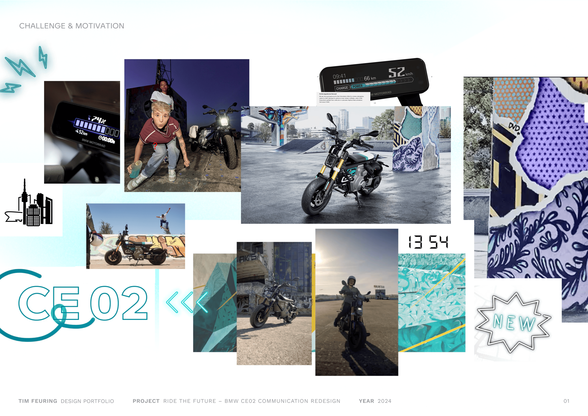
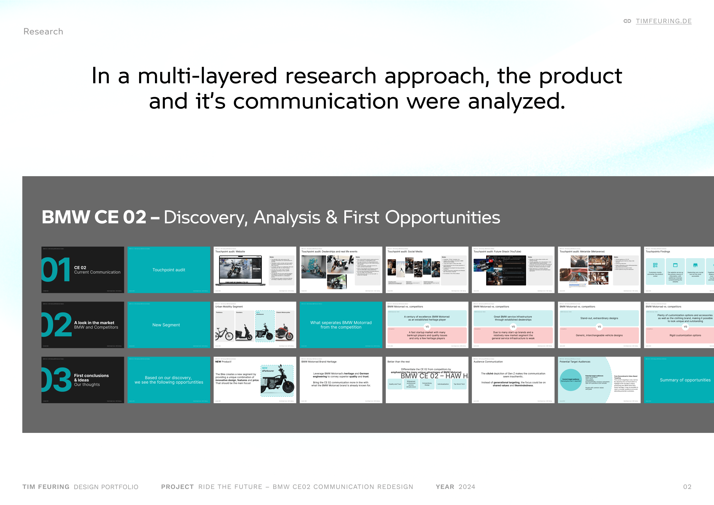
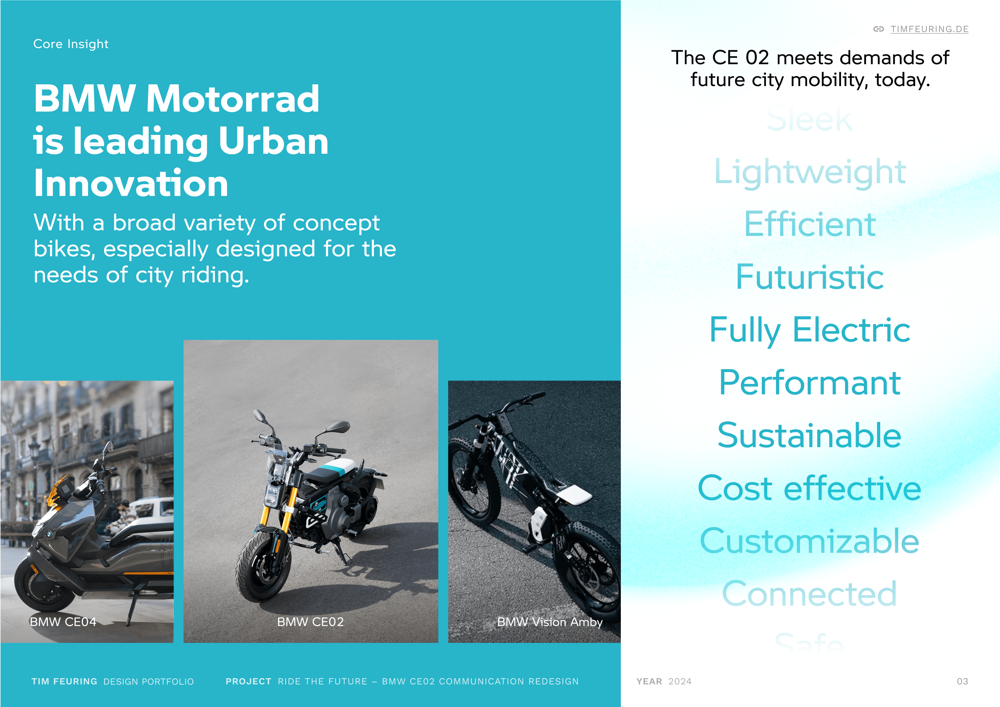
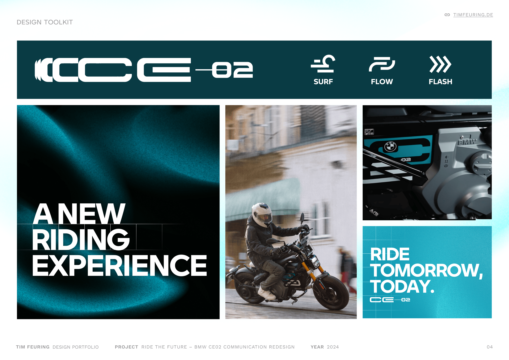
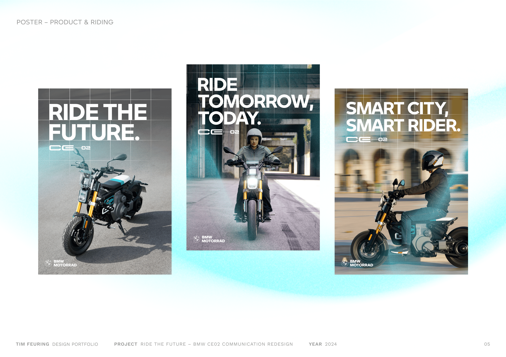
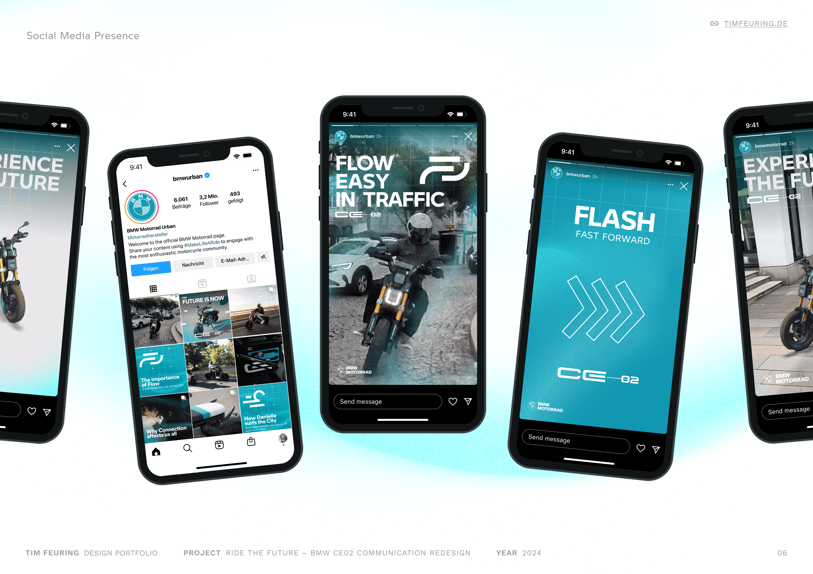
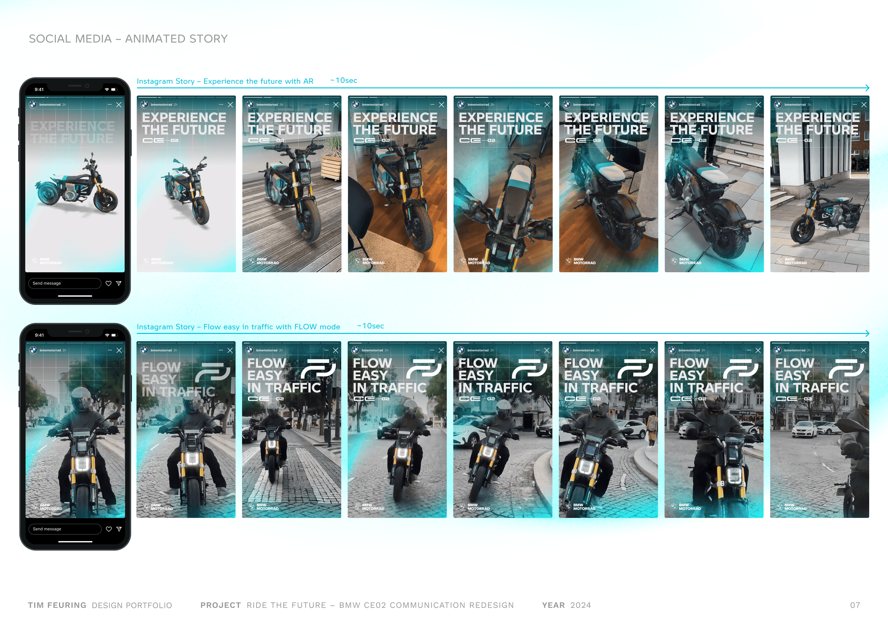
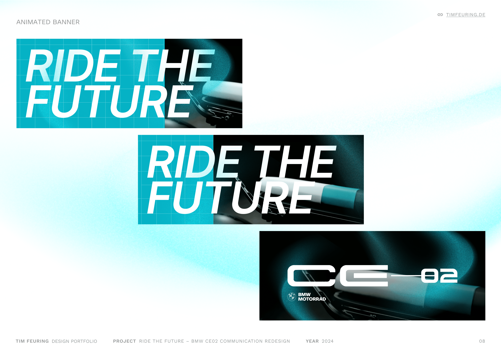
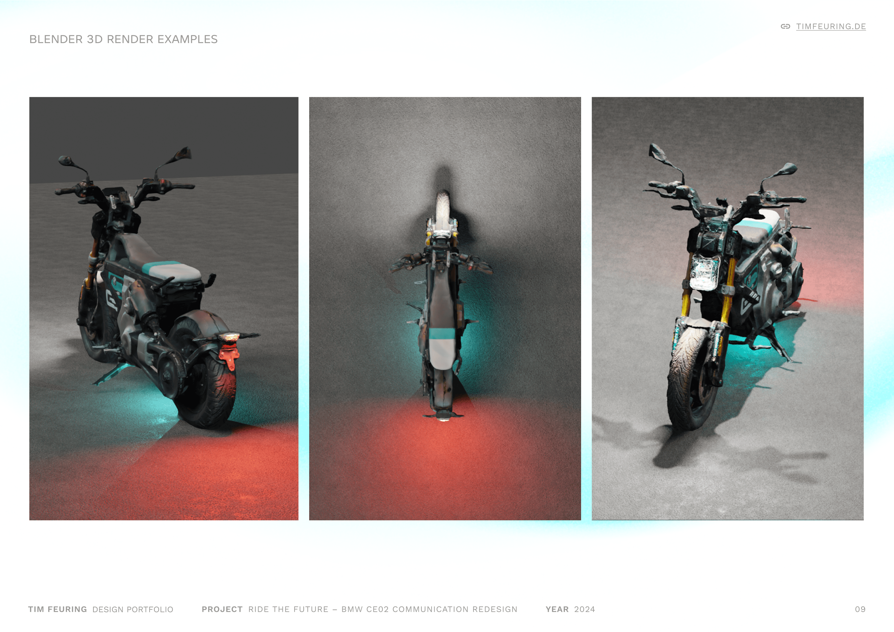
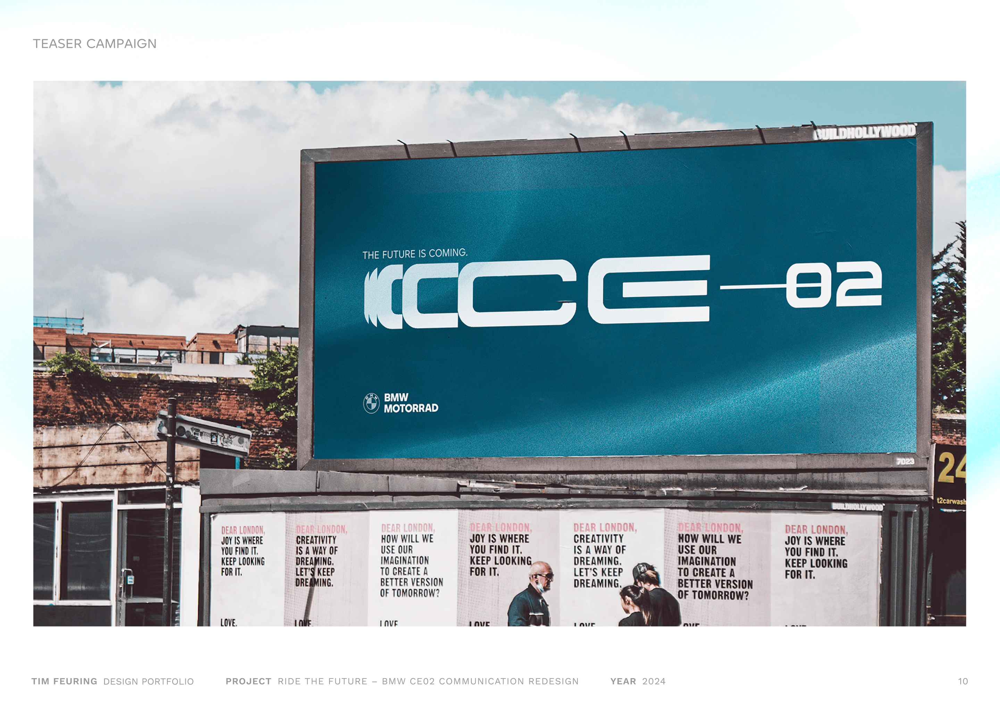

The Project

The current CE 02 communication tries hard to appear youthful and edgy, but ends up feeling forced. A mix of graffiti, Gen Z slang, and multiple graphic styles creates an aesthetic that lacks clarity and credibility. The challenge was to cut through the noise and create a communication style that speaks to young urban audiences in a more honest and focused way.

A multi-layered research approach was used to understand both the product and its communication. This included reviewing BMW’s current messaging, analyzing competitors, and drawing conclusions on what works, and what doesn’t. The research laid the groundwork for visual and content strategies that feel more authentic, and less like marketing trying to go viral. This research phase was concluded in a shared student effort, from which individual design routes were deducted.

BMW Motorrad is already pushing boundaries in urban mobility with a strong portfolio of concept bikes made for city use. The CE02 isn’t just another e-scooter: It’s a future-ready mobility solution that answers real needs in urban environments. The communication concept aims to reflect that: confident, clear, and with a strong sense of purpose.

The visual language relies on high-quality, engaging imagery paired with bold and structured structured typography. A reduced color palette centered around petrol tones creates a strong identity for BMW Motorrads urban segment. A grid system is used as a consistent visual factor across layouts, and the bold house typoraphy creates impact. Atmospheric gradients and overlays add depth and movement, giving a sense of energy and motion without overwhelming content. This design toolkit is straightforward but flexible, allowing the storytelling to stand out.

Bold messaging, strong typography, and dynamic visuals of the product bring a series of posters to life, conveying a modern, urban, future-driven vibe.

On Instagram, the campaign comes to life through bold profile visuals as well as dynamic animated stories, echoing the product's energy and speaking to a digital-first, urban audience.

I created an immersive AR video of, showing how a 3D model of the vehicle can be placed and admired anywhere in their environment. This brings the product directly into their world. Complementing this, another Instagram story format showcases the vehicle’s driving modes with smooth animations, offering an engaging, interactive experience.

Another animation approach for a wide banner format, showcasing bold typography and delicate product shots.

A 3D model made using Polycam and refined in Blender resulted in a useful digital asset, to be used for special product shots and light settings.

The future is coming – a design for a teaser campaign offers a first glimpse into the visual language, while yet leaving open how the product looks like.